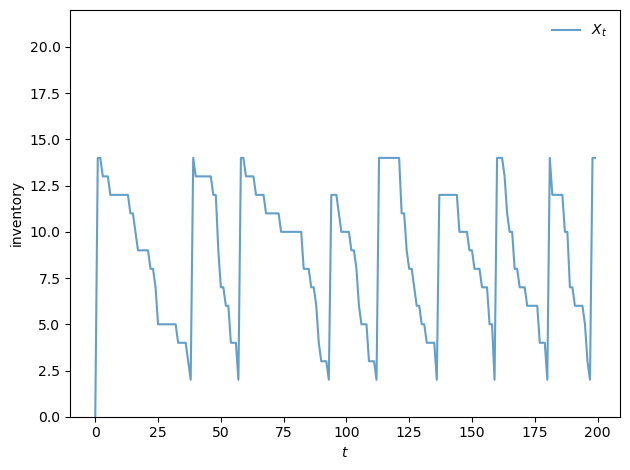
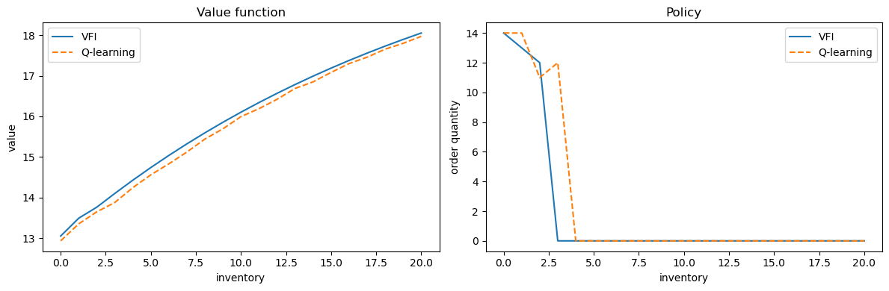
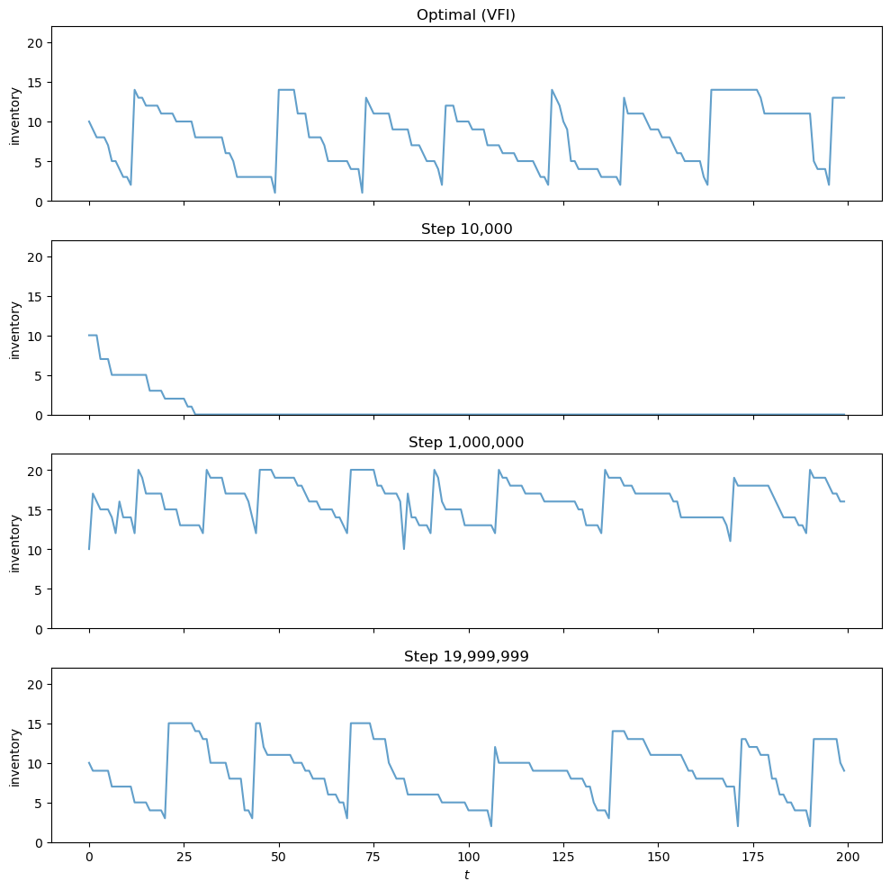

52. Inventory Management via Q-Learning#
52.1. Introduction#
In this lecture we study a classic inventory management problem.
A firm must decide how much stock to order each period, facing uncertain demand and a trade-off between lost sales and ordering costs.
We approach the problem in two ways.
First, we solve it exactly using dynamic programming, assuming full knowledge of the model — the demand distribution, cost parameters, and transition dynamics.
Second, we show how a manager can learn the optimal policy from experience alone, using Q-learning.
The manager observes only the inventory level, the order placed, the resulting profit, and the next inventory level — without knowing any of the underlying parameters.
A key idea is the Q-factor representation, which reformulates the Bellman equation so that the optimal policy can be recovered without knowledge of the transition function.
We show that, given enough experience, the manager’s learned policy converges to the optimal one.
We will use the following imports:
import numpy as np
import numba
import matplotlib.pyplot as plt
from typing import NamedTuple
52.2. The Model#
We study a firm where a manager tries to maximize shareholder value.
To simplify the problem, we assume that the firm only sells one product.
Letting \(\pi_t\) be profits at time \(t\) and \(r > 0\) be the interest rate, the value of the firm is
Suppose the firm faces exogenous demand process \((D_t)_{t \geq 0}\).
We assume \((D_t)_{t \geq 0}\) is IID with common distribution \(\phi\) on \(\{0, 1, \ldots\}\).
Inventory \((X_t)_{t \geq 0}\) of the product obeys
The term \(A_t\) is units of stock ordered this period, which arrive at the start of period \(t+1\), after demand \(D_{t+1}\) is realized and served.
(We use a \(t\) subscript in \(A_t\) to indicate the information set: it is chosen before \(D_{t+1}\) is observed.)
We assume that the firm can store at most \(K\) items at one time.
Profits are given by
Here
the sales price is set to unity (for convenience)
revenue is the minimum of current stock and demand because orders in excess of inventory are lost rather than back-filled
\(c\) is unit product cost and \(\kappa\) is a fixed cost of ordering inventory
We can map our inventory problem into a dynamic program with state space \(\mathsf X := \{0, \ldots, K\}\) and action space \(\mathsf A := \mathsf X\).
The feasible correspondence \(\Gamma\) is
This represents the set of feasible orders when the current inventory state is \(x\).
The Bellman equation takes the form
Here \(D\) is a random variable with distribution \(\phi\).
52.3. Solving via Value Function Iteration#
Let’s start in a setting where the manager knows all parameters, functional forms, and distributions.
She solves the model numerically using value function iteration (VFI).
The idea is to iterate on the Bellman operator \(T\) defined by
starting from an initial guess \(v_0\).
Then, taking the output \(v\) from this iteration process, we compute a \(v\)-greedy policy \(\sigma\), which obeys
When \(r > 0\), the sequence \(v_{k+1} = T v_k\) converges to the unique fixed point \(v^*\), which is the value function of the optimal policy (see, e.g., [Sargent and Stachurski, 2025]).
52.3.1. Model specification#
We store the model primitives in a NamedTuple.
Demand follows a geometric distribution with parameter \(p\), so \(\phi(d) = (1 - p)^d \, p\) for \(d = 0, 1, 2, \ldots\).
class Model(NamedTuple):
x_values: np.ndarray # Inventory values
d_values: np.ndarray # Demand values for summation
ϕ_values: np.ndarray # Demand probabilities
p: float # Demand parameter
c: float # Unit cost
κ: float # Fixed cost
β: float # Discount factor
The function below constructs a Model instance with default parameters.
We truncate the demand distribution at D_MAX for computational purposes.
def create_sdd_inventory_model(
K: int = 20, # Max inventory
D_MAX: int = 21, # Demand upper bound for summation
p: float = 0.7,
c: float = 0.2,
κ: float = 0.8,
β: float = 0.98
) -> Model:
def demand_pdf(p, d):
return (1 - p)**d * p
d_values = np.arange(D_MAX)
ϕ_values = demand_pdf(p, d_values) # ϕ_0, ϕ_1,...
x_values = np.arange(K + 1) # 0, 1, ..., K
return Model(x_values, d_values, ϕ_values, p, c, κ, β)
52.3.2. The Bellman operator#
The core computation is the Bellman operator \(T\).
For each inventory level \(x\), we loop over all feasible order quantities \(a \in \{0, \ldots, K - x\}\) and compute the expected value
We then take the maximum over \(a\).
The inner loops are compiled with Numba for performance.
@numba.jit(nopython=True)
def T_kernel(v, d_values, ϕ_values, c, κ, β, K):
new_v = np.empty(K + 1)
for x in range(K + 1):
best = -np.inf
for a in range(K - x + 1): # loop over feasible actions
val = 0.0
for i in range(len(d_values)): # compute expectation over demand
d = d_values[i]
x_next = max(x - d, 0) + a
revenue = min(x, d)
cost = c * a + κ * (a > 0)
val += ϕ_values[i] * (revenue - cost + β * v[x_next])
if val > best:
best = val
new_v[x] = best
return new_v
The wrapper function T unpacks the model and calls the compiled kernel.
def T(v, model):
"""The Bellman operator."""
x_values, d_values, ϕ_values, p, c, κ, β = model
K = len(x_values) - 1
return T_kernel(v, d_values, ϕ_values, c, κ, β, K)
52.3.3. Computing the greedy policy#
Recall that, given a value function \(v\), the \(v\)-greedy policy is computed via
The structure is the same as the Bellman operator, except we record the maximizing action rather than the maximized value.
@numba.jit(nopython=True)
def get_greedy_kernel(v, d_values, ϕ_values, c, κ, β, K):
σ = np.empty(K + 1, dtype=np.int32)
for x in range(K + 1):
best = -np.inf
best_a = 0
for a in range(K - x + 1):
val = 0.0
for i in range(len(d_values)):
d = d_values[i]
x_next = max(x - d, 0) + a
revenue = min(x, d)
cost = c * a + κ * (a > 0)
val += ϕ_values[i] * (revenue - cost + β * v[x_next])
if val > best:
best = val
best_a = a
σ[x] = best_a
return σ
def get_greedy(v, model):
"""Get a v-greedy policy."""
x_values, d_values, ϕ_values, p, c, κ, β = model
K = len(x_values) - 1
return get_greedy_kernel(v, d_values, ϕ_values, c, κ, β, K)
52.3.4. Value function iteration#
We iterate \(v_{k+1} = T v_k\) until convergence, starting from \(v_0 = 0\).
Once the value function has converged (to within tolerance tol), we extract the optimal policy \(\sigma^*\) via get_greedy.
def solve_inventory_model(v_init, model, max_iter=10_000, tol=1e-6):
v = v_init.copy()
i, error = 0, tol + 1
while i < max_iter and error > tol:
new_v = T(v, model)
error = np.max(np.abs(new_v - v))
i += 1
v = new_v
print(f"Converged in {i} iterations with error {error:.2e}")
σ = get_greedy(v, model)
return v, σ
52.3.5. Creating and solving an instance#
model = create_sdd_inventory_model()
x_values, d_values, ϕ_values, p, c, κ, β = model
n_x = len(x_values)
v_init = np.zeros(n_x)
v_star, σ_star = solve_inventory_model(v_init, model)
Converged in 623 iterations with error 9.95e-07
52.3.6. Simulating the optimal policy#
To visualize the solution, we simulate the inventory process under the optimal policy \(\sigma^*\).
At each step, we draw a demand shock from the geometric distribution and update the state via \(h\).
@numba.jit(nopython=True)
def sim_inventories(ts_length, σ, p, X_init=0):
"""Simulate inventory dynamics under policy σ."""
X = np.zeros(ts_length, dtype=np.int32)
X[0] = X_init
for t in range(ts_length - 1):
d = np.random.geometric(p) - 1
X[t+1] = max(X[t] - d, 0) + σ[X[t]]
return X
The plot below shows a typical inventory path under the optimal policy.
Notice the S-s pattern: when inventory falls to a low level, the firm places a large order to replenish stock (the upward jumps), after which inventory gradually declines as demand is served.
def plot_ts(ts_length=200, fontsize=10):
X = sim_inventories(ts_length, σ_star, p)
fig, ax = plt.subplots()
ax.plot(X, label=r"$X_t$", alpha=0.7)
ax.set_xlabel(r"$t$", fontsize=fontsize)
ax.set_ylabel("inventory", fontsize=fontsize)
ax.legend(fontsize=fontsize, frameon=False)
ax.set_ylim(0, len(σ_star) + 1)
plt.tight_layout()
plt.show()
plot_ts()

52.4. Q-Learning#
We now ask: can an agent learn the optimal policy without knowing the model?
In particular, suppose the agent does not know the demand distribution \(\phi\), the cost parameters \(c\) and \(\kappa\), or the transition function \(h\).
Instead, the agent only observes the sequence of states, actions, and profits as it interacts with the environment.
52.4.1. The Q-factor Bellman equation#
The first step of Q-learning is to modify the Bellman equation, placing it in a form that allows learning from this limited information.
Rather than working with the value function \(v(x)\), we work with the Q-function (or Q-factor) \(q(x, a)\).
We define \(q\) in terms of the value function \(v^*\) as
In words, \(q(x, a)\) is the expected value of taking action \(a\) in state \(x\) and then following the optimal policy thereafter.
Note that the Bellman equation (52.1) can be written as
Substituting this back into the definition of \(q\), we can eliminate \(v^*\) and obtain a fixed point equation in \(q\) alone:
where \(x' = h(x, a, D)\).
One advantage of working with \(q\) is that the optimal policy can be read off directly as \(\sigma(x) = \arg\max_a q(x, a)\), without needing to know the transition function.
52.4.2. The Q-learning update rule#
Q-learning approximates the fixed point of the Q-factor Bellman equation using stochastic approximation.
At each step, the agent is in state \(x\), takes action \(a\), observes reward \(R_{t+1} = \pi(x, a, D_{t+1})\) and next state \(X_{t+1} = h(x, a, D_{t+1})\), and updates
where \(\alpha_t\) is the learning rate.
The update blends the current estimate \(q_t(x, a)\) with a fresh sample of the Bellman target.
52.4.3. The Q-table and the behavior policy#
It is important to understand how the update rule relates to the manager’s actions.
The manager maintains a Q-table — a lookup table storing an estimate \(q_t(x, a)\) for every state-action pair \((x, a)\).
At each step, the manager is in some state \(x\) and must choose a specific action \(a\) to take. Whichever \(a\) is chosen, the manager observes profit \(R_{t+1}\) and next state \(X_{t+1}\), and updates that one entry \(q_t(x, a)\) of the table using the rule above.
The max computes a value, not an action.
It is tempting to read the \(\max_{a'}\) in the update rule as prescribing the manager’s next action — that is, to interpret the update as saying “move to state \(X_{t+1}\) and take action \(\argmax_{a'} q_t(X_{t+1}, a')\).”
But the \(\max\) plays a different role. The quantity \(\max_{a' \in \Gamma(X_{t+1})} q_t(X_{t+1}, a')\) is a scalar — it estimates the value of being in state \(X_{t+1}\) under the best possible continuation. This scalar enters the update as part of the target value for \(q_t(x, a)\).
Which action the manager actually takes at state \(X_{t+1}\) is a separate decision entirely.
To see why this distinction matters, consider what happens if we modify the update rule by replacing the \(\max\) with evaluation under a fixed feasible policy \(\sigma\):
This modified update is a stochastic sample of the Bellman evaluation operator for \(\sigma\). The Q-table then converges to \(q^\sigma\) — the Q-function associated with the lifetime value of \(\sigma\), not the optimal one.
By contrast, the original update with the \(\max\) is a stochastic sample of the Bellman optimality operator, whose fixed point is \(q^*\). The \(\max\) in the update target is therefore what drives convergence to \(q^*\).
The behavior policy.
The rule governing how the manager chooses actions is called the behavior policy. Because the \(\max\) in the update target always points toward \(q^*\) regardless of how the manager selects actions, the behavior policy affects only which \((x, a)\) entries get visited — and hence updated — over time.
In the reinforcement learning literature, this property is called off-policy learning: the convergence target (\(q^*\)) does not depend on the behavior policy.
As long as every \((x, a)\) pair is visited infinitely often (so that every entry of the Q-table receives infinitely many updates) and the learning rates satisfy standard conditions (see below), the Q-table converges to \(q^*\).
The behavior policy affects the speed of convergence — visiting important state-action pairs more frequently leads to faster learning — but not the limit.
In practice, we want the manager to mostly take good actions (to earn reasonable profits while learning), while still occasionally experimenting to discover better alternatives.
52.4.4. What the manager needs to know#
Notice what is not required to implement the update.
The manager does not need to know the demand distribution \(\phi\), the unit cost \(c\), the fixed cost \(\kappa\), or the transition function \(h\).
All the manager needs to observe at each step is:
the current inventory level \(x\),
the order quantity \(a\) they chose,
the resulting profit \(R_{t+1}\) (which appears on the books), and
the next inventory level \(X_{t+1}\) (which they can read off the warehouse).
These are all directly observable quantities — no model knowledge is required.
52.4.5. Learning rate#
We use \(\alpha_t = 1 / n_t(x, a)^{0.51}\), where \(n_t(x, a)\) is the number of times the pair \((x, a)\) has been visited up to time \(t\).
This decays slowly enough to allow learning from later (better-informed) updates, while still satisfying the Robbins-Monro conditions for convergence.
52.4.6. Exploration: epsilon-greedy#
For our behavior policy, we use an \(\varepsilon\)-greedy strategy:
With probability \(\varepsilon\), choose a random feasible action (explore).
With probability \(1 - \varepsilon\), choose the action with the highest current \(q\)-value (exploit).
The exploration ensures that every state-action pair is visited, which is needed for convergence.
The exploitation ensures the manager earns reasonable profits while learning.
We decay \(\varepsilon\) each step: \(\varepsilon_{t+1} = \max(\varepsilon_{\min},\; \varepsilon_t \cdot \lambda)\), so the manager experiments widely early on and increasingly relies on learned \(q\)-values as experience accumulates.
The stochastic demand shocks naturally drive the manager across different inventory levels, providing exploration over the state space without any artificial resets.
52.4.7. Implementation#
We first define a helper to extract the greedy policy from a Q-table.
@numba.jit(nopython=True)
def greedy_policy_from_q(q, K):
"""Extract greedy policy from Q-table."""
σ = np.empty(K + 1, dtype=np.int32)
for x in range(K + 1):
best_val = -np.inf
best_a = 0
for a in range(K - x + 1):
if q[x, a] > best_val:
best_val = q[x, a]
best_a = a
σ[x] = best_a
return σ
The Q-learning loop runs for n_steps total steps in a single continuous trajectory — just as a real manager would learn from the ongoing stream of data.
At specified step counts (given by snapshot_steps), we record the current greedy policy.
@numba.jit(nopython=True)
def q_learning_kernel(K, p, c, κ, β, n_steps, X_init,
ε_init, ε_min, ε_decay, snapshot_steps):
q = np.zeros((K + 1, K + 1))
n = np.zeros((K + 1, K + 1)) # visit counts for learning rate
ε = ε_init
n_snaps = len(snapshot_steps)
snapshots = np.zeros((n_snaps, K + 1), dtype=np.int32)
snap_idx = 0
# Initialize state and action
x = X_init
a = np.random.randint(0, K - x + 1)
for t in range(n_steps):
# Record policy snapshot if needed
if snap_idx < n_snaps and t == snapshot_steps[snap_idx]:
snapshots[snap_idx] = greedy_policy_from_q(q, K)
snap_idx += 1
# === Observe outcome ===
d = np.random.geometric(p) - 1
reward = min(x, d) - c * a - κ * (a > 0)
x_next = max(x - d, 0) + a
# === Max over next state (scalar value for update target) ===
# Also record the argmax action for use by the behavior policy.
best_next = -np.inf
a_next = 0
for aa in range(K - x_next + 1):
if q[x_next, aa] > best_next:
best_next = q[x_next, aa]
a_next = aa
# === Q-learning update (uses best_next, the max value) ===
n[x, a] += 1
α = 1.0 / n[x, a] ** 0.51
q[x, a] = (1 - α) * q[x, a] + α * (reward + β * best_next)
# === Behavior policy: ε-greedy (uses a_next, the argmax action) ===
x = x_next
if np.random.random() < ε:
a = np.random.randint(0, K - x + 1)
else:
a = a_next
ε = max(ε_min, ε * ε_decay)
return q, snapshots
The wrapper function unpacks the model and provides default hyperparameters.
def q_learning(model, n_steps=20_000_000, X_init=0,
ε_init=1.0, ε_min=0.01, ε_decay=0.999999,
snapshot_steps=None):
x_values, d_values, ϕ_values, p, c, κ, β = model
K = len(x_values) - 1
if snapshot_steps is None:
snapshot_steps = np.array([], dtype=np.int64)
return q_learning_kernel(K, p, c, κ, β, n_steps, X_init,
ε_init, ε_min, ε_decay, snapshot_steps)
52.4.8. Running Q-learning#
We run 20 million steps and take policy snapshots at steps 10,000, 1,000,000, and at the end.
np.random.seed(1234)
snap_steps = np.array([10_000, 1_000_000, 19_999_999], dtype=np.int64)
q, snapshots = q_learning(model, snapshot_steps=snap_steps)
52.4.9. Comparing with the exact solution#
We extract the value function and policy from the final Q-table via
and compare them against \(v^*\) and \(\sigma^*\) from VFI.
K = len(x_values) - 1
v_q = np.array([np.max(q[x, :K - x + 1]) for x in range(K + 1)])
σ_q = np.array([np.argmax(q[x, :K - x + 1]) for x in range(K + 1)])
fig, axes = plt.subplots(1, 2, figsize=(12, 4))
axes[0].plot(x_values, v_star, label="VFI")
axes[0].plot(x_values, v_q, '--', label="Q-learning")
axes[0].set_xlabel("inventory")
axes[0].set_ylabel("value")
axes[0].legend()
axes[0].set_title("Value function")
axes[1].plot(x_values, σ_star, label="VFI")
axes[1].plot(x_values, σ_q, '--', label="Q-learning")
axes[1].set_xlabel("inventory")
axes[1].set_ylabel("order quantity")
axes[1].legend()
axes[1].set_title("Policy")
plt.tight_layout()
plt.show()

52.4.10. Visualizing learning over time#
The panels below show how the agent’s behavior evolves during training.
Each panel simulates an inventory path using the greedy policy extracted from the Q-table at a given training step.
All panels use the same demand sequence (via a fixed random seed), so differences reflect only changes in the policy.
The top panel shows the optimal policy from VFI for reference.
After only 10,000 steps the agent has barely explored and its policy is poor.
By step 20 million, the learned policy produces inventory dynamics that closely resemble the S-s pattern of the optimal solution.
ts_length = 200
n_snaps = len(snap_steps)
fig, axes = plt.subplots(n_snaps + 1, 1, figsize=(10, 2.5 * (n_snaps + 1)),
sharex=True)
X_init = K // 2
sim_seed = 5678
# Optimal policy
np.random.seed(sim_seed)
X_opt = sim_inventories(ts_length, σ_star, p, X_init)
axes[0].plot(X_opt, alpha=0.7)
axes[0].set_ylabel("inventory")
axes[0].set_title("Optimal (VFI)")
axes[0].set_ylim(0, K + 2)
# Q-learning snapshots
for i in range(n_snaps):
σ_snap = snapshots[i]
np.random.seed(sim_seed)
X = sim_inventories(ts_length, σ_snap, p, X_init)
axes[i + 1].plot(X, alpha=0.7)
axes[i + 1].set_ylabel("inventory")
axes[i + 1].set_title(f"Step {snap_steps[i]:,}")
axes[i + 1].set_ylim(0, K + 2)
axes[-1].set_xlabel(r"$t$")
plt.tight_layout()
plt.show()
